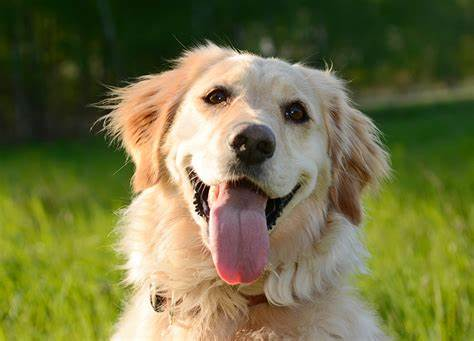
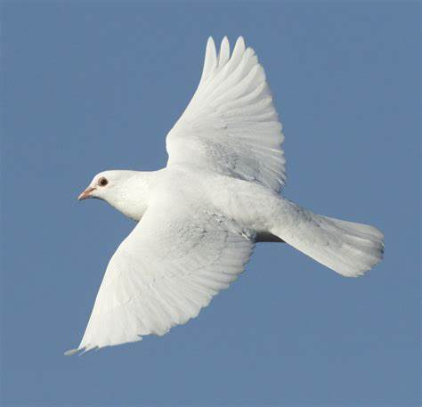
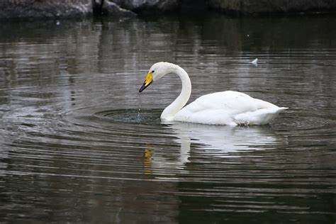
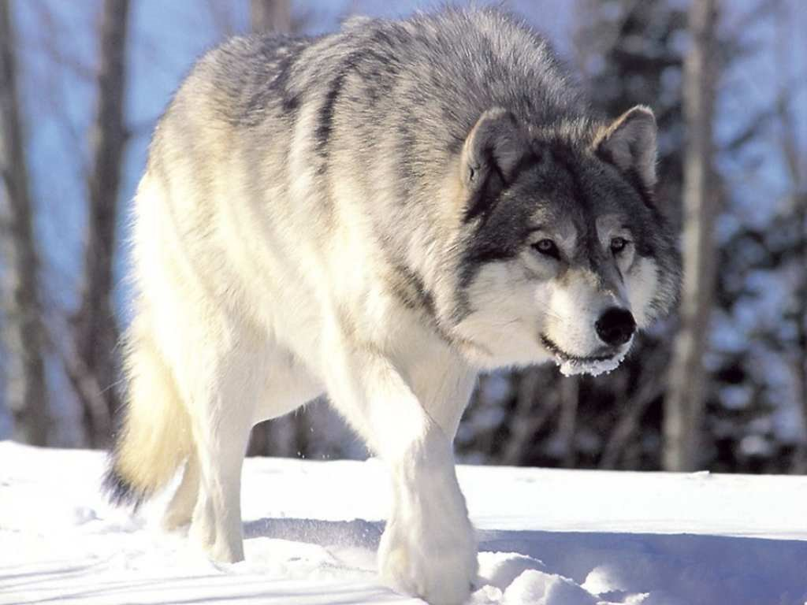

My Favorite Animals 🐾

Dog
Loyal, playful, and always ready to brighten your day. My best companion.

Dove
Gentle and calm, the dove symbolizes peace, love, and serenity — a quiet beauty of nature.

Swan
Known for their grace and loyalty, swans are symbols of beauty, balance, and love.

Wolf
Strong, social, and fiercely loyal. A symbol of unity and wild spirit.